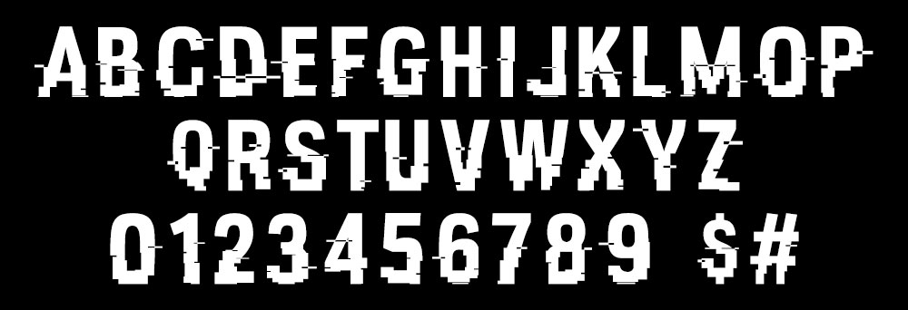
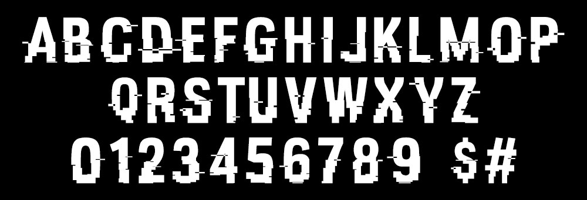

Discover the font


Highly anticipated feature. We're glad you noticed. https://t.co/4zCeidVd5z
— Watch Dogs (@watchdogsgame) 8 juin 2016
You can pet dogs in WATCH_DOGS 2
— Luis Illingworth (@HeyRaguio) 8 juin 2016
I am now calling the game PET_DOGS pic.twitter.com/gOZNTluSQV
We have a winner #washdogs2 #watchdogs2 https://t.co/DtqwfZ5Q94
— Watch Dogs (@watchdogsgame) 9 juin 2016
#Dedseccreations #WatchDogs2 R3qu3st3d by @AssassinWill529 c: pic.twitter.com/Qw1zfynUnp
— R@y W0lf0rd (@Ray_Wolford) 1 août 2016